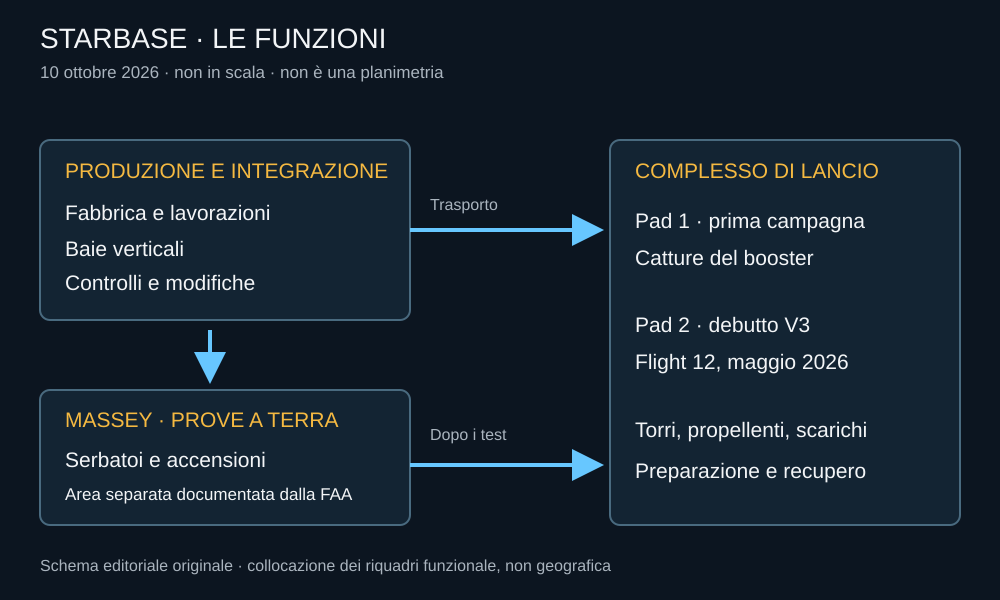

Dire Starbase può indicare la fabbrica, l’area di lancio o l’intero sistema di luoghi. Questa ambiguità è comoda nella conversazione e poco utile per capire un aggiornamento tecnico. Una prova statica non avviene necessariamente sotto la torre dalla quale partirà il veicolo; una nuova nave vista in una baia non è automaticamente pronta al lancio.
La mappa di questa edizione
Verifica editoriale: 10 ottobre 2026. I punti sono riferimenti approssimativi delle aree pubblicamente documentate, non coordinate operative. La cartografia OpenStreetMap è aggiornata dalla sua comunità: non è un’immagine satellitare acquisita oggi. Le due piattaforme del complesso di lancio sono descritte nello stesso punto, senza inventare coordinate di precisione per le torri.
La cartografia esterna si carica soltanto dopo il clic. L’atlante testuale e lo schema qui sotto funzionano anche senza mappa.
Produzione
Area di riferimento: 25,9859° N, 97,1896° W. Fabbricazione e integrazione; il punto è vicino all’area documentata nelle fotografie del sito, non alla porta di uno specifico edificio.
Complesso di lancio
Area di riferimento: 25,9970° N, 97,1570° W. Torri, piattaforme, impianti di propellente e sistemi di gestione degli scarichi. Comprende Pad 1 e Pad 2.


Fabbrica e integrazione
Le aree produttive preparano strutture e impianti. Le baie consentono di unire grandi sezioni e completare lavorazioni sul veicolo verticale. La sequenza reale può tornare indietro: un componente ispezionato può richiedere un intervento, e una nave già assemblata può ricevere modifiche. La presenza di un oggetto in un edificio dice dove si trova, non quale livello di accettazione abbia superato.
Massey e le prove a terra
Il documento FAA del 2025 descrive Massey come area di prove, comprendendo test dei serbatoi e accensioni statiche. Separare alcune verifiche dalla rampa può liberare quest’ultima e ridurre la dipendenza fra preparazione del volo e collaudo del veicolo successivo. Non significa eliminare rischi o necessità di coordinamento.
Due piattaforme, stati diversi
Pad 1 è associata alla prima campagna di voli integrati e alla cattura del booster. Il resoconto del Flight 11 indica la conclusione dell’uso della sua configurazione di allora. Pad 2 ha sostenuto il debutto V3 nel Flight 12. Questo è un riscontro operativo, più forte della semplice presenza di una torre in una fotografia.
La mappa non assegna percentuali di completamento ai cantieri. Anche una struttura esternamente finita può attendere impianti, collaudi e autorizzazioni; una struttura in modifica può conservare parti utilizzabili. Lo stato va riferito alla funzione e alla data.
Leggere un’immagine senza inventare una notizia
Una fotografia ravvicinata è utile per riconoscere un impianto e debole per stabilire la disponibilità dell’intero complesso. Un disegno depositato in una procedura ambientale descrive ciò che viene esaminato, non prova che sia già costruito. Una mappa collaborativa può mostrare un edificio più recente della planimetria ufficiale, ma non sostituisce una verifica tecnica.
Questo atlante conserva dunque due livelli: la geografia, che aiuta a orientarsi, e le funzioni documentate, che aiutano a capire. Gli aggiornamenti futuri dovranno modificare entrambi soltanto quando esistano elementi verificabili.
Dati cartografici © OpenStreetMap contributors, ODbL. Nessuna indicazione di accesso pubblico: rispettare chiusure e limiti locali.
Fonti pubbliche e tracce
- OpenStreetMap, dati e attribuzione. Mappa interattiva con attribuzione ODbL; edifici e marker non costituiscono una perizia sul cantiere.
- FAA, Final Tiered EA Increased Cadence, aprile 2025. Configurazioni di sito e attività esaminate; una planimetria ambientale non certifica il completamento di ogni edificio.
- SpaceX, resoconto Flight 11. Resoconto del costruttore; obiettivi di prova distinti dal successo commerciale.
- SpaceX, resoconto Flight 12. Resoconto del costruttore; obiettivi di prova distinti dal successo commerciale.
Consultare l’atlante tecnico
Caratteristiche, schemi, configurazioni e limiti: Starbase.